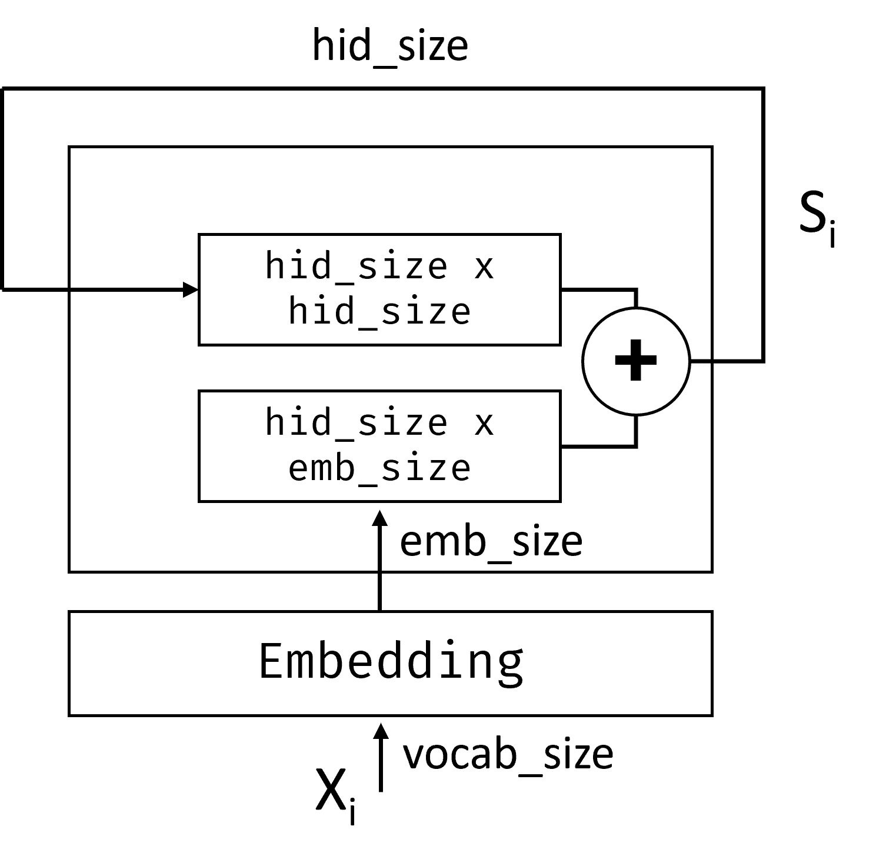
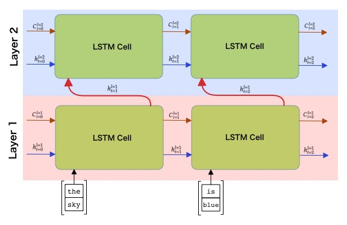

Recurrent Neural Networks
Pre-lecture quiz
In previous sections, we have been using rich semantic representations of text and a simple linear classifier on top of the embeddings. What this architecture does is to capture the aggregated meaning of words in a sentence, but it does not take into account the order of words, because the aggregation operation on top of embeddings removed this information from the original text. Because these models are unable to model word ordering, they cannot solve more complex or ambiguous tasks such as text generation or question answering.
To capture the meaning of text sequence, we need to use another neural network architecture, which is called a recurrent neural network, or RNN. In RNN, we pass our sentence through the network one symbol at a time, and the network produces some state, which we then pass to the network again with the next symbol.

Image by the author
Given the input sequence of tokens X0,...,Xn, RNN creates a sequence of neural network blocks, and trains this sequence end-to-end using backpropagation. Each network block takes a pair (Xi,Si) as an input, and produces Si+1 as a result. The final state Sn or (output Yn) goes into a linear classifier to produce the result. All the network blocks share the same weights, and are trained end-to-end using one backpropagation pass.
Because state vectors S0,...,Sn are passed through the network, it is able to learn the sequential dependencies between words. For example, when the word not appears somewhere in the sequence, it can learn to negate certain elements within the state vector, resulting in negation.
✅ Since the weights of all RNN blocks on the picture above are shared, the same picture can be represented as one block (on the right) with a recurrent feedback loop, which passes the output state of the network back to the input.
Anatomy of an RNN Cell
Let's see how a simple RNN cell is organized. It accepts the previous state Si-1 and current symbol Xi as inputs, and has to produce the output state Si (and, sometimes, we are also interested in some other output Yi, as in the case with generative networks).
A simple RNN cell has two weight matrices inside: one transforms an input symbol (let's call it W), and another one transforms an input state (H). In this case the output of the network is calculated as σ(W×Xi+H×Si-1+b), where σ is the activation function and b is additional bias.

Image by the author
In many cases, input tokens are passed through the embedding layer before entering the RNN to lower the dimensionality. In this case, if the dimension of the input vectors is emb_size, and state vector is hid_size - the size of W is emb_size×hid_size, and the size of H is hid_size×hid_size.
Long Short Term Memory (LSTM)
One of the main problems of classical RNNs is the so-called vanishing gradients problem. Because RNNs are trained end-to-end in one backpropagation pass, it has difficulty propagating error to the first layers of the network, and thus the network cannot learn relationships between distant tokens. One of the ways to avoid this problem is to introduce explicit state management by using so called gates. There are two well-known architectures of this kind: Long Short Term Memory (LSTM) and Gated Relay Unit (GRU).

Image source TBD
The LSTM Network is organized in a manner similar to RNN, but there are two states that are being passed from layer to layer: the actual state C, and the hidden vector H. At each unit, the hidden vector Hi is concatenated with input Xi, and they control what happens to the state C via gates. Each gate is a neural network with sigmoid activation (output in the range [0,1]), which can be thought of as a bitwise mask when multiplied by the state vector. There are the following gates (from left to right on the picture above):
- The forget gate takes a hidden vector and determines which components of the vector C we need to forget, and which to pass through.
- The input gate takes some information from the input and hidden vectors and inserts it into state.
- The output gate transforms state via a linear layer with tanh activation, then selects some of its components using a hidden vector Hi to produce a new state Ci+1.
Components of the state C can be thought of as some flags that can be switched on and off. For example, when we encounter a name Alice in the sequence, we may want to assume that it refers to a female character, and raise the flag in the state that we have a female noun in the sentence. When we further encounter phrases and Tom, we will raise the flag that we have a plural noun. Thus by manipulating state we can supposedly keep track of the grammatical properties of sentence parts.
✅ An excellent resource for understanding the internals of LSTM is this great article Understanding LSTM Networks by Christopher Olah.
Bidirectional and Multilayer RNNs
We have discussed recurrent networks that operate in one direction, from beginning of a sequence to the end. It looks natural, because it resembles the way we read and listen to speech. However, since in many practical cases we have random access to the input sequence, it might make sense to run recurrent computation in both directions. Such networks are call bidirectional RNNs. When dealing with bidirectional network, we would need two hidden state vectors, one for each direction.
A Recurrent network, either one-directional or bidirectional, captures certain patterns within a sequence, and can store them into a state vector or pass into output. As with convolutional networks, we can build another recurrent layer on top of the first one to capture higher level patterns and build from low-level patterns extracted by the first layer. This leads us to the notion of a multi-layer RNN which consists of two or more recurrent networks, where the output of the previous layer is passed to the next layer as input.

Picture from this wonderful post by Fernando López
✍️ Exercises: Embeddings
Continue your learning in the following notebooks:
Conclusion
In this unit, we have seen that RNNs can be used for sequence classification, but in fact, they can handle many more tasks, such as text generation, machine translation, and more. We will consider those tasks in the next unit.
🚀 Challenge
Read through some literature about LSTMs and consider their applications:
- Grid Long Short-Term Memory
- Show, Attend and Tell: Neural Image Caption Generation with Visual Attention
Post-lecture quiz
Review & Self Study
- Understanding LSTM Networks by Christopher Olah.